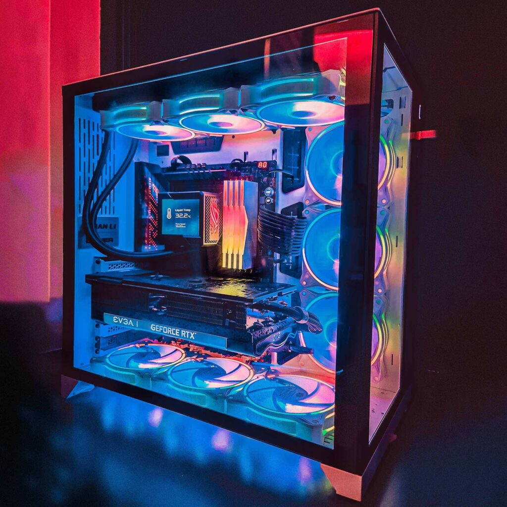

Em 2025, a tecnologia avança mais rápido do que nunca, e na TechPeças, estamos sempre um passo à frente para garantir que você tenha acesso às peças mais inovadoras e de alto desempenho para montar ou atualizar o seu computador.
- Processadores de 12ª Geração e Além: Experimente a potência dos novos processadores com arquitetura de 3nm, oferecendo eficiência energética e desempenho incomparáveis para gamers, profissionais e entusiastas.
- Placas de Vídeo com Ray Tracing Quântico: As GPUs da nova geração trazem gráficos realistas e suporte para inteligência artificial integrada, perfeitas para jogos em 8K e renderização em tempo real.
- Memórias DDR6 Com velocidades que ultrapassam os 10.000 MT/s, nossas memórias DDR5 garantem multitarefa fluida e desempenho máximo em qualquer aplicação.
- Armazenamento NVMe 5.0: SSDs com taxas de transferência de até 20 GB/s e capacidades de até 50 TB, revolucionando a forma como você armazena e acessa seus dados
- Fontes de Alimentação: Tecnologia eco-friendly com eficiência de 95% e certificação Platinum Plus, reduzindo o consumo de energia sem comprometer a performance.
A AMD continua inovando no mercado de processadores com a linha Ryzen, trazendo alto desempenho e eficiência para diferentes perfis de usuários. Confira alguns dos modelos mais recentes:
AMD Ryzen 7 7800X3D – Equipado com a tecnologia 3D V-Cache, esse processador é ideal para gamers exigentes, oferecendo excelente desempenho em jogos e aplicativos pesados.
AMD Ryzen 5 9600X - Com arquitetura aprimorada, esse modelo entrega alta velocidade para multitarefas e desempenho sólido em games e produtividade.
AMD Ryzen 9 9950X - O topo de linha da AMD, projetado para entusiastas e profissionais que precisam de potência bruta para tarefas como edição de vídeo, renderização e desenvolvimento.
AMD Ryzen 5 8500G - Processador com gráficos integrados, perfeito para quem busca uma solução equilibrada para trabalho e entretenimento sem a necessidade de uma GPU dedicada.
AMD Ryzen 5 7600X - Um dos melhores custo-benefício para games e produtividade, com altas frequências e suporte a tecnologias avançadas.
AMD Ryzen 5 8600G - Modelo com gráficos integrados RDNA 3, ideal para quem deseja um PC potente sem gastar muito em placa de vídeo.
AMD Ryzen 5 7600 - Versão mais acessível da série 7000, mantendo um ótimo desempenho para tarefas cotidianas e jogos casuais.
Placas de Vídeo: Potência para Gamers e Criadores.
A escolha da placa de vídeo é essencial para quem busca alto desempenho em jogos, edição de vídeo e outras tarefas exigentes.
Confira alguns dos modelos mais poderosos do mercado:
NVIDIA GeForce RTX 4090 – A GPU mais potente da NVIDIA, com suporte ao DirectX 12 e tecnologia de ponta para games em 4K, ray tracing e inteligência artificial avançada.
AMD Radeon RX 7900 XTX – A melhor opção da AMD, trazendo excelente desempenho em 4K, alto clock e memória GDDR6 para rivalizar com as GPUs mais potentes da NVIDIA.
NVIDIA GeForce RTX 4080 SUPER – Um modelo avançado da linha RTX 4000, oferecendo ótimo equilíbrio entre desempenho e eficiência, com suporte para ray tracing e DLSS 3.
A memória RAM é um dos componentes essenciais para garantir um sistema rápido e responsivo.
Confira alguns modelos de alto desempenho disponíveis no mercado:
Corsair Vengeance DDR5 32GB (2x16GB) 6000MHz –Ideal para gamers e profissionais, oferecendo alta velocidade e baixa latência para um desempenho superior.
Kingston Fury Beast DDR5 32GB (2x16GB) 5600MHz – Equilíbrio entre performance e custo-benefício, perfeita para quem busca mais eficiência em multitarefas.
G.Skill Trident Z5 RGB DDR5 32GB (2x16GB) 6400MHz – Além do design premium com iluminação RGB, entrega alto desempenho para overclocking e tarefas exigentes.
Crucial Pro DDR5 16GB 5200MHz – Uma excelente opção para usuários que querem atualizar seus sistemas para a nova geração de memórias DDR5.
Para quem busca o máximo desempenho em armazenamento, os SSDs de última geração oferecem velocidades impressionantes e alta capacidade.
Confira quatro dos modelos mais potentes disponíveis atualmente:
Seagate LaCie Rugged SSD Pro5 –Anunciado na CES 2025, este SSD com interface Thunderbolt 5 oferece velocidades de leitura de até 6.700 MB/s e gravação de 5.300 MB/s, disponível em versões de 2 TB e 4 TB.
Sabrent Rocket XTRM 5 –Com suporte ao Thunderbolt 5, este modelo atinge velocidades de leitura de 6.000 MB/s e gravação de 5.000 MB/s, disponível em diversas capacidades.
Corsair MP700 Pro –Este SSD PCIe Gen5 oferece velocidades de leitura sequencial de até 11.700 MB/s e gravação de 9.600 MB/s, ideal para gamers e profissionais que necessitam de alto desempenho.
WD_BLACK SN850X –Com interface PCIe Gen4, este SSD oferece velocidades de leitura de até 7.300 MB/s e gravação de 6.600 MB/s, sendo uma excelente opção para jogos e aplicações exigentes.
Uma fonte de alimentação de qualidade é essencial para garantir a estabilidade e a longevidade do seu sistema.
Confira três modelos de destaque no mercado:
Corsair RM1000x CP-9020094-WW –Com 1000W de potência e certificação 80 Plus Gold, esta fonte oferece alta eficiência energética e é ideal para setups avançados que demandam alto desempenho.
Redragon RGPS 600W 80 Plus Bronze –Esta fonte de 600W com certificação 80 Plus Bronze proporciona um excelente equilíbrio entre custo e benefício, sendo adequada para a maioria dos sistemas de médio porte.
MSI MEG Ai1600T PCIE5 - Apresentada na CES 2025, esta fonte de 1600W é projetada para alimentar estações de trabalho e sistemas de jogos de última geração, garantindo energia estável e segura.